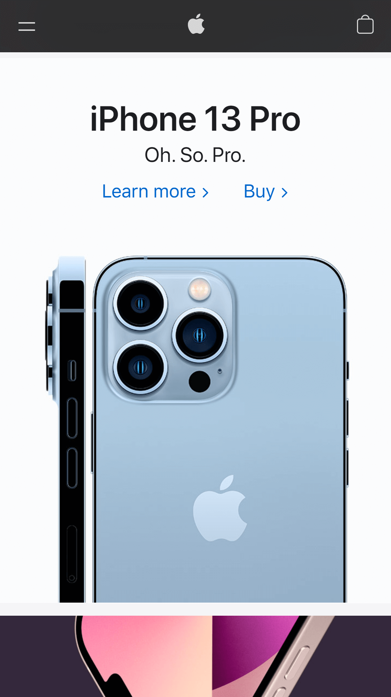

White Space and Clean Design
Apple
https://www.apple.com/

In design, white space is the space around an object that is unused. Despite the name, it does not have to be white. White space is important because it helps make the design feel less cluttered while also allowing more focus to be placed on the subject. Apples home page exibits the principle of white space quite well. Everything is easy to read and has plenty of space. It feels clean and crisp. There are no borders which helps make the small screen not look cluttered.
Rule of Thirds
Amazon
https://www.amazon.com/
The rule of thirds is meant to be a set of guidelines that splits your canvas into thirds. Normally your subject would be in one of the edge thirds leaving the other two more open. This was a very hard concept to find in a website on a small screen. Amazons website does not have a clear subject in one of the thirds but the website is split evenly into three columns. Each column holds one or part of one item and each item fits into 1, 2, or 3 of the columns perfectly.
PARC: Repetition
Obermayer
https://www.obermayer.com/
Repetition is pretty self explanitory. It is repeating elements, themes, ideas, colors, or really anything in a design. But the trick is using it to your advantage to help people remember your design. This website uses repetition in its yellow and grey colors. It uses the same colors throughout the entire website and it looks really nice.